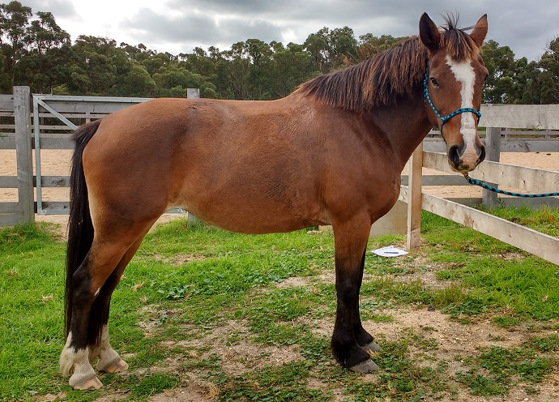
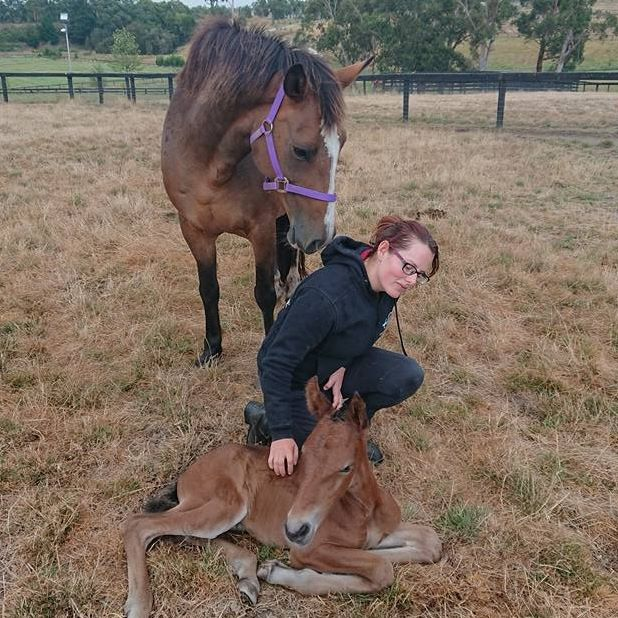
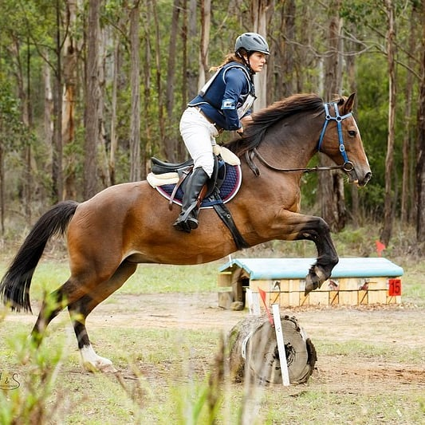

Equusential Blog Blog Posts

Posted on 08 June 2020
Where it all began..
I would like to share a little backstory on why I decided to learn equine massage. Over 4 years ago I was having trouble with my mare being unsound. Squirrel is a Clydesdale cross Australian Stockhorse. She was around 12 when she became noticeable unsound in her hind end. She would slip and trip in her hind legs. I had also noticed she was developing white hairs where her saddle sat, especially behind the withers.
After just wishing it would 'go away' on it's own, I finally had a body worker treat her. After a somewhat distressing treatment where she collapsed several times in the back, I was told that my saddle was too wide for her and this was causing her back pain. This was then resulting in the hind end not working as the nerves were being so significantly compressed. I could see during the treatment that she was showing dramatic signs of back pain.
"... I was ashamed to have caused her so much pain."
Once I had time to digest this information I had to work through my egotistical feelings about the situation. I was ashamed to have caused her so much pain. I was annoyed to learn that the saddle I had bought with my savings especially for her because it was wide enough for her shoulders, was actually too wide for her back. I was distressed at her level of demonstrated pain and scar damage. I was mortified that I had kept riding her through nerve pain and astounded at her honesty for not demonstrating bad behaviour despite this pain. It took a lot of soul searching and thoughts on what to do next.
I started researching back pain in horses and what I could do. I reached out to a few friends who were body workers. I found the National College of Traditional Medicine online which was a Victorian training provider and 'borrowed' from our joint funds to enrol in their Diploma of Equine Naturopathy. Part of this course became my Equine Myofunctional education and hands-on education training and course work.

Squirrel 2016: EMT Case study
After completing this course I began my business Equusential Therapies. Initially it was casual, on the weekends as people needed. It wasn't super busy as I could only do it on the odd spare weekend.. but I was seeing some great outcomes for my few clients. I was consistently impressed with how readily horses accept and benefit from massage treatment.
Learning more about how to help horses has always been my passion and I've completed a number of further training (CPD) courses in this time including a dissection course and rehabilitation course which were particularly valuable.
This year, 2020, marked when I could finally commit to the business every day of the week as I quit my full-time administration job. I'm really enjoying the opportunity to take on more clients and see the positive outcomes when owners take concerted commitments. Adopting a regular massage routine to their horses needs, and also adopting recommendations for rehabilitation programs including stretching and core conditioning. Also seeking third-party expertise as recommended. It is incredibly gratifying for me, the owner and of course their horse to see these outcomes!
Finally to Squirrel – the 'why' for pursuing this skill. Squirrel is now around 16. She had her first foal on Valentines day 2018.

Squirrel, Ardilla and Yvette 2018
Her back is stronger now than it has ever been with me. I have tried a variety of modalities to get it there but the key points have included: regular massage (obviously!), a custom made saddle and appropriate fitting of her existing saddles, good nutrition, gradual return to ridden work, ground work, regular poles session and core conditioning stretches. I also joined my local adult riding club which greatly improved both of our fitness through cross-training. Our future riding career is now bright! It takes perseverance and maintenance but she is now sound in the body and also saddle damage scar free!

Squirrel 2020, Orbost Horse Trials
I hope you enjoyed learning a bit more about how Equusential Therapies began.
If you would like to know more: please get in touch! Yvette x